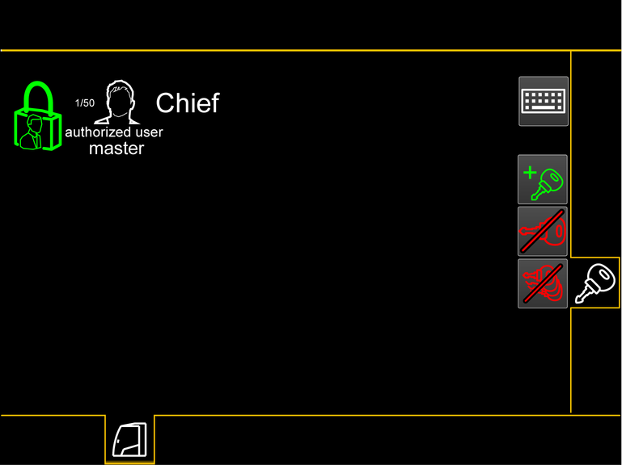
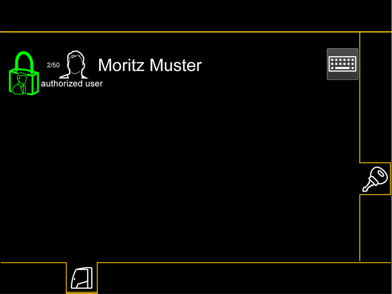

Mit Nachrüstsatz Zugangskontrolle (Rote und blaue Zündschlüssel)*
Diese Situation tritt unter folgenden Bedingungen ein:
– | Maschine wurde mit aktueller Software mit Bildschirmseite Zugangskontrolle ausgeliefert. |
– | Maschine wurde mit einem roten Administrator-Zündschlüssel und blauen, benutzerspezifischen Zündschlüsseln ausgeliefert. |
– | Nachrüstsatz Zugangskontrolle wurde gekauft. |
Bei der Erstinbetriebnahme funktioniert ausschließlich der rote Administrator-Zündschlüssel.
Jeder blaue, benutzerspezifische Zündschlüssel muss erst durch den Administrator autorisiert werden, somit ist eine Zugangskontrolle gewährleistet.
Die maximale Anzahl an blauen, benutzerspezifischen Zündschlüsseln beträgt 50.

Fig. 1918: Bildschirmseite Zugangskontrolle - mit Nachrüstsatz Zugangskontrolle (Zugang mit rotem Administrator-Zündschlüssel)
Fig. 1918: Bildschirmseite Zugangskontrolle - mit Nachrüstsatz Zugangskontrolle (Zugang mit rotem Administrator-Zündschlüssel)
Taste Tastatur
Tastatur zur Änderung des Namens einblenden.
Taste Zündschlüssel autorisieren (leuchtet grün)
Blauen, benutzerspezifischen Zündschlüssel autorisieren.
Taste Schlüssel sperren (leuchtet rot)
Blauen, benutzerspezifischen Zündschlüssels sperren.
Taste Alle Schlüssel sperren (leuchtet rot)
Alle blauen, benutzerspezifischen Zündschlüssel sperren.

Fig. 1924: Bildschirmseite Zugangskontrolle - mit Nachrüstsatz Zugangskontrolle (Zugang mit blauem, benutzerspezifischem Benutzer-Schlüssel)
Fig. 1924: Bildschirmseite Zugangskontrolle - mit Nachrüstsatz Zugangskontrolle (Zugang mit blauem, benutzerspezifischem Benutzer-Schlüssel)
Taste Tastatur
Tastatur zur Änderung des Namens einblenden.